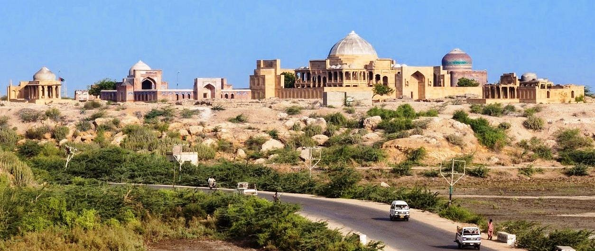

<div class="portfolio-single-load clearfix">
    <div class="custom-full-width-box">
        <div class="custom-container">
            <div class="custom-row align-items-center">
                <div class="custom-image-column">
                    
                </div>
                <div class="custom-text-column">
                    <h2 class="custom-heading">Thatta</h2>
                    <p class="custom-paragraph">
                        Thatta, a UNESCO World Heritage Site, is a historic city located near Karachi. Renowned for its exquisite architecture and cultural significance, Thatta was once a flourishing center of trade and culture. Visitors can explore its ancient monuments, including the Chaukundi Tombs, Makli Necropolis, and Shah Jehan Mosque, which showcase the region's rich architectural heritage and artistic craftsmanship.
                    </p>
                </div>
            </div>
        </div>
    </div><!-- .custom-full-width-box end -->

</div><!-- end single-project -->
